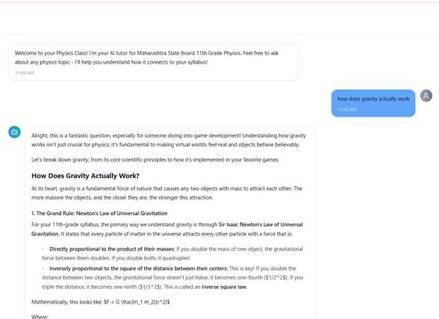

Personalization of digital education has come to depend on artificial intelligence tools and techniques. Despite these technological advancements, a major drawback of contemporary e-learning systems is their failure to create meaningful and contextual relationships with learners. Most e-learning systems distribute uniform and rigid learning content that tends to fail in retaining learners' attention, especially when explaining abstract STEM theories. Learners can greatly benefit from learning materials that connect abstract theories and paradigms with their personal interests and hobbies, thus transforming conventional lecture text into an intuitive and relatable narrative.
Currently, intelligent tutoring systems incorporating large language models are found to be deficient in providing a formal framework for hobby-centric content personalization. Only a few systems have been found to possess the ability to adjust their narratives and models according to an individual's unique recreational interests. This has emphasized the need for an intelligent infrastructure that utilizes the services of large language models for creating interest-aligned educational texts while maintaining factual integrity.
Researchers have always tried to understand adaptive sequences for course work and how to monitor what a student knows. However, a significant gap has always existed in how to automatically integrate a student's personal interests into the work material. Most tools and techniques, such as intelligent routing of work material, have always focused on how to change the order of information presented to a student instead of changing the texture and flavor of the information presented. Other tools and techniques have focused on how to ensure that information presented is factually correct but have ignored how to ensure that information presented is aligned with a student's mindset. This work focuses on this ignored aspect and proposes an orchestration pipeline that can effectively integrate a student's personal hobbies into work material.
| System | Focus | Approach | Key Finding | Limitation |
|---|---|---|---|---|
| KG-RAG | Course-aware grounded tutoring | Knowledge graph + semantic retrieval + LLM + feedback | Grounding improves factual consistency | Complex architecture; limited multimodal UX |
| GenAI Schema | Knowledge structuring | Theoretical GenAI framework for schema building | Supports retention and efficiency | No multimodal modes or interest adaptation |
| SocratiQ | Adaptive Socratic tutoring | Dynamic path adaptation; STEM focus | Strong at adapting learning paths | Path-focused; limited multimodal artifacts |
| MIALS | Multimodal signals | Behavioral/emotional/cognitive personalization | Improves engagement via adaptivity | No automatic course-aligned artifact generation |
| QuizBot | Dialogue-based learning | Conversational sequencing; recall focus | Dialogue outperforms static flashcards | Limited to factual recall; no visual depth |
| Iris | CS education tutor | Hints and counter-questions | Improves programming confidence | Domain-limited; no cross-subject multimodality |
The contribution of this paper is a framework on how to effectively utilize an LLM to create an Interest Mapping framework. Some of the innovative parts of this work include a crafted prompt pipeline, a semantic linking technique, and an evaluation framework meant to measure how successful the narrative has been. By effectively isolating this aspect, it can be demonstrated that it is possible to utilize a student's hobby information to create a more effective text learning experience.
The rest of the paper is organized as follows: Section II presents an overview of the software architecture and how it works. Section III presents an overview of how it has been tested and how effective it is. Section IV presents closing thoughts and possible avenues for further work.
Our system operates as a real-time text synthesis tutor in a modular form. It has been designed as a multi-layered system consisting of Application Logic, the Generative AI core, and the Data Persistence layer. We have specifically designed the Generative AI segment of the system, which generates the texts, and the Data segment of the system, which stores the student's hobby information.
The core of the system is the LangChain-based text generator that relies on open-source endpoints of LLMs that specialize in meaning understanding. The core innovation of the system is the "Interest Mapping," where the meaning of the required academic curriculum is cross-checked with the student's hobby information stored in the Data segment of the system. A multi-step prompt system is utilized to prompt the LLM to produce texts that explain the required academic curriculum by directly using analogies to the student's hobby information.
The Database segment of the system relies on MongoDB as the non-relational database to facilitate the fast, asynchronous reading and writing of user context information. The primary information stored in the Database segment consists of the Learner's Profile, which contains the student's hobby information, the student's grade level, and the student's performance markers, as well as the Content Artifact, which contains the final texts generated by the AI module for later reference.
The Interest Mapping innovation relies on a three-step closed loop that starts with the Context Acquisition segment of the system, which retrieves the user's hobby information stored in the Database segment of the system, followed by the Text Synthesis segment of the system, where the LangChain API is called to prompt the LLM to produce the required academic curriculum in the form of a text that explains the required curriculum by directly using the student's hobby information, and finally the Evaluation Tracking segment of the system, where the final texts generated by the AI module of the system are stored for later reference.
To validate the Interest Mapping mechanism, an evaluation was conducted across 20 distinct scientific and mathematical subjects. The generative pipeline produced 100 isolated textual lessons. The primary objective of the assessment was to determine the qualitative success of the narrative adaptation in relation to the provided user profiles.

The evaluation relied on tracking the success rate of several qualitative parameters, ensuring that the integration of hobbies did not compromise the academic integrity of the text. The outcomes are summarized in Table I.
| Adaptation Parameter | Success Rate | Description |
|---|---|---|
| Hobby Integration Rate | 87% | Successful inclusion of relevant personal interest analogies |
| Lexical Appropriateness | 91% | Vocabulary aligned with the user's academic grade level |
| Difficulty Calibration | 85% | Conceptual depth matched to the user's proficiency |
| Curriculum Accuracy | 93% | Maintenance of factual and domain-specific correctness |
The data is clear in showing that we can create educational stories that are learner-centric, as evidenced by an 87% success rate in Hobby Integration. This supports our notion that semantic mapping using an LLM can produce learner-centric texts. Similarly, a Curriculum Accuracy rate of 93% indicates that incorporating recreational analogies does not reduce the educational rigor of STEM concepts. Overall, most of our generated educational lessons scored highly in terms of educational quality.
In this paper, we presented how an Interest Mapping framework using an LLM was created and validated to address the engagement issue in traditional e-learning systems. By using prompt engineering techniques to combine educational concepts with user hobbies, our system can generate personalized texts that are highly relevant to learners.
In terms of immediate work, we intend to incorporate RAG models to guarantee precision in terms of facts in analogies. Future work also involves extending the Interest Mapping algorithm to include an automated assessment tool that can generate learner tests and flashcards that are related to their hobbies.
[1] C. Dong, Y. Yuan, K. Chen, S. Cheng, and C. Wen, “How to Build an Adaptive AI Tutor for Any Course Using Knowledge Graph-Enhanced Retrieval-Augmented Generation (KG-RAG),” The Education University of Hong Kong & The University of Adelaide, 2024, pp. 1–12.
[2] B. Salgado Granda, Y. Inzhivotkina, M. F. Ibáñez Apolo, and J. G. Ugarte Fajardo, “Educational innovation: Exploring the potential of Generative Artificial Intelligence in cognitive schema building,” EDUTEC: Revista Electrónica de Tecnología Educativa, Issue 89, Sept. 2024, pp. 1–14.
[3] C.-C. Lin, A. Y. Q. Huang, and O. H. T. Lu, “Artificial intelligence in intelligent tutoring systems toward sustainable education: A systematic review,” Smart Learning Environments, vol. 10, no. 41, 2023, pp. 1–23.
[4] E. Kochmar, D. D. Vu, R. Belfer, et al., “Automated Data-Driven Generation of Personalized Pedagogical Interventions in Intelligent Tutoring Systems,” International Journal of Artificial Intelligence in Education, vol. 32, pp. 323–349, 2022.
[5] C. Yalim and H. H. Handley, “Integrating Generative Artificial Intelligence with Systems Architecting Diagram Creation: Advancement, Challenges, Opportunities and Future Perspectives,” in Proc. American Society for Engineering Management International Annual Conference, Virginia Beach, USA, 2024, pp. 1–9.
[6] I. V. Serban, V. Gupta, E. Kochmar, D. D. Vu, R. Belfer, J. Pineau, A. Courville, L. Charlin, and Y. Bengio, “A Large-Scale, Open-Domain, Mixed-Interface Dialogue-Based Intelligent Tutoring System for STEM,” Korbit Technologies Inc., Montreal, 2020, pp. 1–15.
[7] R. Sajja, Y. Sermet, M. Cikmaz, D. Cwiertny, and I. Demir, “Artificial Intelligence-Enabled Intelligent Assistant for Personalized and Adaptive Learning in Higher Education,” University of Iowa Journal Publications, 2024, pp. 1–12.
[8] D. Baradari, N. Kosmyna, O. Petrov, R. Kaplun, and P. Maes, “NeuroChat: A Neuroadaptive AI Chatbot for Customizing Learning Experiences,” MIT Media Lab Technical Report, 2024, pp. 1–10.
[9] M. Park, S. Kim, S. Lee, S. Kwon, and K. Kim, “Empowering Personalized Learning through a Conversation-Based Tutoring System with Student Modeling,” Riiid AI Research Publications, Seoul, Republic of Korea, 2024, pp. 1–9.
[10] J. Cañadas, M. Mena, J. A. Llopis, R. M. Ayala, F. García, J. Criado, and J. Barón, “Approaches to Utilizing Generative Artificial Intelligence in Programming and Software Engineering Education,” in ICERI2024 Proceedings, Seville, Spain, 2024, pp. 7184–7189.
[11] S. Yazdani, M. Najimi, and M. Ahmadzadeh, “The Paradox of Generative AI in Programming Education,” in EDULEARN25 Proceedings, Palma, Spain, 2025, pp. 7775–7784.